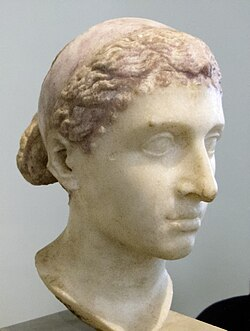
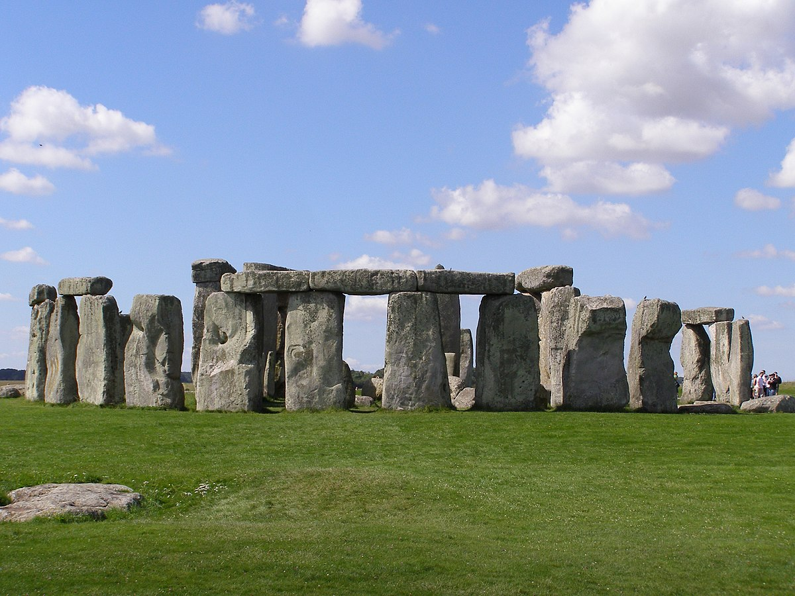
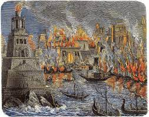

Cleopatra's Tomb
Cleopatra VII Philopator, the last Pharaoh of ancient Egypt, is a figure wrapped in legend, power, and romance. Known for her intelligence, political acumen, and dramatic alliances with Julius Caesar and Mark Antony, Cleopatra’s life story has fascinated historians for centuries. Yet, despite all we know about her reign, one of the greatest mysteries remains: the location of her tomb. Ancient sources hint that Cleopatra and Mark Antony were buried together in a grand mausoleum somewhere near the ancient city of Alexandria, possibly in a temple dedicated to Osiris, the god of the afterlife. However, the exact site has never been found. Over the millennia, earthquakes, rising sea levels, and urban expansion have buried or destroyed much of Alexandria’s ancient landscape, complicating archaeological efforts. Modern expeditions and underwater searches continue to probe the Mediterranean seabed near Alexandria, hoping to uncover ruins that could reveal the queen’s final resting place. Discovering Cleopatra’s tomb would not only solve a historical puzzle but could provide priceless insights into Ptolemaic burial practices and the legacy of one of history’s most powerful women. The mystery endures, inspiring countless books, films, and quests — a testament to Cleopatra’s enduring allure and the secrets still hidden beneath the sands and waves of Egypt.
The Voynich Manuscript
The Voynich Manuscript is a baffling, undeciphered book dating back to the early 15th century. Filled with strange, looping script and bizarre illustrations of unknown plants, astrological diagrams, and mysterious figures, the manuscript has puzzled linguists, historians, and cryptographers for over a century. Despite numerous attempts, no one has conclusively cracked its code or identified its purpose. Some believe it's a lost language or a complex cipher; others think it's an elaborate hoax. The manuscript is currently housed at Yale University’s Beinecke Rare Book & Manuscript Library, where it continues to fuel scholarly debates and conspiracy theories alike.

Stonehenge
Stonehenge is one of the most iconic and mysterious prehistoric monuments in the world, located in Wiltshire, England. Believed to have been constructed between 3000 and 2000 BCE, the site consists of a circular arrangement of massive standing stones, some weighing over 25 tons. Archaeologists and historians still debate its purpose—some theories suggest it was used for astronomical observations, religious rituals, or as a burial ground. The precise methods used to transport and erect the stones remain a marvel of ancient engineering. Despite centuries of research, Stonehenge continues to captivate the imagination, standing as a silent witness to a long-lost civilization’s ingenuity and spiritual life.
Library of Alexandria
The Library of Alexandria, located in ancient Egypt, was one of the most significant libraries of the ancient world. Founded in the 3rd century BCE during the reign of Ptolemy I or II, it was said to house hundreds of thousands of scrolls and texts from across the known world. The library was part of a grand vision to collect all human knowledge, and scholars from various cultures studied and wrote there. Tragically, it was destroyed—likely in a series of fires and conflicts over centuries—leading to the loss of priceless historical, scientific, and philosophical works. Its destruction remains a symbol of cultural loss and the fragility of knowledge.
